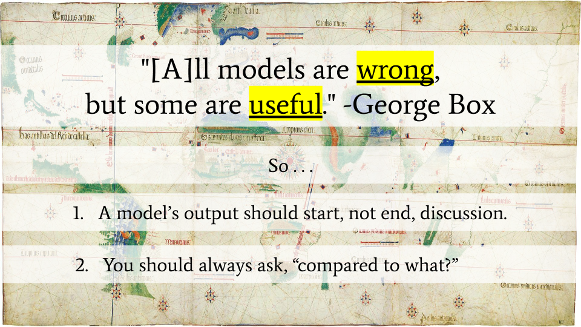

Despite what I said above, Substantive Legal Software Quality—A Gathering Storm? isn't part of this level's reading. I've decided to move it to Level 3.
Also, I've tried to refine my description of the As You Like It Method, described in the video above. I decided to take the name from Shakespeare's As You Like It from which we get the quote, "All the world's a stage."
All the World's a Stage: How To Achieve Almost Any Goal in Three Easy Steps0
- Craft a believable story, set in the present, that ends with The Goal being achieved.1
- Break this story into scenes, and have those on Team Goal do their best to act out the first scene.2
- After reality deviates from the script, the scene ends, or the passage of some fixed amount of time, repeat these steps until either: The Goal is met; or it becomes impossible to craft a believable story.3
0 These rules began its life as a playbook for students working as part of the LIT Lab’s consultancy practice. Originally, I was shooting for something like the Digital Services Playbook. Unfortunately, my early drafts relied too much on nomenclature and industry norms unfamiliar to the average law student. I considered zooming in (providing context and explanation for every reference), but that seemed like a recipe for infinite regress. So I opted to zoom out and focus on general principles. This has freed me to use specific examples for illustrative purposes without the need for them to be all encompassing. It also allows me to highlight similarities between multiple systems for getting things done. To avoid the trap of just telling folks to draw the Owl, I’m providing some context for each of the steps through footnotes and appendices. Yes, this is a bit of a gimmick, and the title above is total click bait. There are only three steps, but it takes thousands of words to imbue them with meaning. It’s worth noting, however, that this is the case for many endeavors. Jargon gets a bad rap, and deservedly so when used to obscure meaning, but a good term of art or framing mechanism, once understood, can stand in for paragraphs of exposition. With the creation of such building blocks, discussion and reasoning can move more quickly. This is especially true for collaborations, where a reliable shorthand eases communication. Consider that the job of every prosecutor in a criminal trial can be boiled down to ten words: prove the elements of the crime(s) beyond a reasonable doubt. Those ten words are a good guide to action. Zoom out more, and you can describe a prosecutor’s whole job in two words: do justice. Such drastic distillation comes with benefits and risks. Done well it can provide clarity and direction. Over do it and you’re left with pablum. Worse yet is the space between, where clarity is an illusion, everyone relying on a sui generis interpretation, secure in the belief their understanding is shared by all. That being said, let’s see if we can arrive at a common understanding.
1Believable is doing a lot of work in this sentence. Here, it’s roughly synonymous with realistic or probable. In order to tell such a story, you have to truly understand your “characters” and their “motivations.” Sometimes you’re lucky, and your characters aren’t people. This is where the hard sciences shine. If asked to tell a story about how to place a satellite in geosynchronous orbit, the primary players (i.e., the satellite and the Earth) find themselves constrained by a set of well-understood physical laws. To achieve geosynchronous orbit we have to get the satellite to a specific distance above the Earth traveling with some set horizontal velocity. That’s it. This is an engineering problem because the story we’re asked to craft ends with an easily-stated objectively-measurable goal, the achievement of which relies on what you might call well-understood “motivations” (physical laws). Once your story includes considerations like how to pay for things, source materials, motivate employees, and clear political hurdles, its nature becomes much more speculative. No longer can the story be told by equations alone. We are speaking of storytelling as simulation. That is, in order to tell a believable story, we construct a series of probable events that result in the desired outcome based on our understanding of how the world works. The scope of our story and the understanding needed to craft it depend greatly on the goal(s) we seek to achieve. So to do this step well, we have to know what we want and enough about the world to tell a story that moves us from the world as it is to the world we want it to be.
Our initial story is unlikely to survive engagement with reality. So it’s important that we’re able to recognize success and change course when we fall short. Consequently, our goals must be measurable. For example, it’s not enough to say that we want to build or do a great thing. We have to define what we would see if we were to build or do a great thing. This doesn’t have to be an objective measure per se. Subjectivity is fine. If by “a great thing” we mean “Sally thinks it’s great,” or “demographic X thinks it’s great,” we can work with that. We just need to identify a measurable success metric. So our metric might be, “Does Sally say she thinks it’s great?” Admittedly, some goals are harder to measure than others, and there is a temptation to redefine our goals to correspond with easily measured metrics. Fight that temptation. Your goals are a reflection of your values, and you shouldn’t compromise them because something is hard (unless you value them less than the required effort). Pragmatism is productive, but it’s not an excuse to be lazy.
2 As you can see from step three, the end of a scene is notable for the fact that it can trigger the creation of a new story. So scenes act as built-in checkpoints. Like the story’s ultimate Goal, they should come with measurable conclusions, but their completion should also tell us something about our overall progress, so we know if we’re moving in the right direction. If your goal is product development, this is comparable to focusing on a Minimum Viable Product per scene, what some might call iterative prototyping.
As for Team Goal, this is just the collection of folks working to achieve The Goal. Your team may be a formal working group or just a collection of folks with common cause. Heck, it may be a team of one. What’s important for our purpose is that the team members are willing to work together and live out their parts in the story. Consequently, it has to be a shared story (one all the members buy into). One of the best ways to make this happen is to have the team contribute to the story’s creation. After all, if they’ll be the ones acting it out, they’re likely to have some suggestions. This of course is just a reflection of what I find to be a believable story. I clearly think that giving folks agency over a story is motivating. Maybe I’m right; maybe I’m wrong. Either way, it’s stories all the way down.
3 The important point here is that there be some regular reassessment. If things go off the rails the need for such will be clear, but you need to build in structures that mandate periodic evaluations. As discussed in footnote 2, scenes provide convenient opportunities for such. Setting a fixed time to check in can act as a fail safe should a chapter take longer than expected to run its course. Whatever the triggering event, step three is the point at which your past work becomes prologue for a new story. If you’re lucky, you can just re-number the scenes from a prior version, advancing one chapter closer to your goal. If you’re really lucky, you’ll find that you’ve reached your goal. More likely, however, you’ll have to make a few adjustments based on what went wrong and what worked well, and occasionally, you’ll discover that there just isn’t a believable story to tell.

Maps are models, and they don't show everything. That's okay.
So What? These steps probably sound familiar. They come in many incarnations and clearly belong to a family of iterative processes like the scientific method, design thinking, and Agile software development. It’s also easy to see in them reflections of cybernetics and Hosfteter’s strange loops. There is nothing more central to the human experience than telling stories. Over the semester, we’ll discuss methodologies like Agile, Kanban, design thinking, GTD and the like because you’ll find their followers and evangelists out in the wild. You may be tempted to ask, “which one is right?” but that’s probably the wrong question. In my experience, any structured method for getting things done is often better than no method. These methods embody mental models that try to describe the world (believable stories), and as George Box observed, “All models are wrong, but some are useful.” So remember that since they’re “wrong” they should start, not end, conversation. Avoid dogma. Second, to know whether or not a model is useful, you have to ask “compared to what?” Models do not exist in isolation. Their adoption will replace something. Again, structure often beats its absence. Maps are models of the world. They don’t show every inch of the territory they describe. So they’re “wrong,” but this doesn’t mean they aren’t useful. Context matters.
When you boil the sum of productivity hacks and management advice down to their essence, they’re all about capturing your goals, crafting believable stories to guide action, testing these stories against reality, and refining them over time. With this in mind, you can better evaluate all that friendly advice. Just ask yourself what it contributes to crafting better shared stories and helping folks stick to the script. If the process includes the word “innovation” or “design” it’s probably concerned with telling better stories, if it’s talking about “productivity” or “efficiency” it’s often about helping folks stick to the script (usually by telling a story that helps guide action). Either way, this advice holds, “do what works.”
Optional Media.
If you want to learn more about some of the topics discussed in the video above, and you have some free time, you might enjoy the following.
Your Mission (Part I): Do They Qualify?
Video: 3-9 Minutes. Protip: You can watch YouTube videos at more than 1X speed.
Work: ~1.5 Hours
I realize I didn't actually tell you how the story ended. Never fear, the court saw the error of their ways and started following the rules. It's worth noting, however, that this was a particularly insidious mistake because it occurred before someone was assigned an attorney while also effecting that choice.
You should forgo doing any additional research beyond the 50-state survey. Note: this contradicts what I said above. That is, you can take the 50-state survey as the authoritative statement on indigency for your jurisdiction. Also, you should spend no more than an hour working on your flowchart. Consider this an MVP. We'll have a chance to improve it later. Seriously, do NOT spend more than an hour making your flowchart!!!!!!
That being said, here's the this spreadsheet and adding your github username to a row.
Once you have created a flowchart, take a picture with your phone (if you drew it on paper, a white board, or the like) or a screenshot/download (if you used a drawing program). Upload your flowchart to your ctl GitHub repo and the name "indigency_flowchart_v1", the file extension doesn't matter, but .png, .jpg, or .pdf are preferred. Check to make sure that you can see your flowchart at the appropriate URL. For example:
https://[your username].github.io/ctl/indigency_flowchart_v1.png
When building your interview, be sure to include a variation of our disclaimer.
Title: Indigency "Flowchart"
Author: [your name]
Before: <link rel="stylesheet" type="text/css" href="https://suffolklitlab.org/howto/qna/style/style.css">
<div id="icon" style="background-size: 110px 99px;background-image: url('https://suffolklitlab.org/howto/qna/images/maxheadroom.gif');"></div>
<h2 style="text-align:center;">Indigency "Flowchart"</h2>
<p><b>This is a <a href="https://www.codingthelaw.org/level/2/#mission_p1">class project</a>. You should not rely on it as a source of legal information!</b></p>
<p>Answer the following questions to see if you qualify for appointed counsel in [insert state name].</p>
Once you have finished your QnA interview, upload both the source code and HTML output to:
https://[your username].github.io/ctl/indigency_v1.txt and
https://[your username].github.io/ctl/indigency_v1.html respectively.
For your convenience, here's the persona info for your simulated user testing. As you work through a persona, externalize your inner monolog. As you watch, be sure to capture what is and isn’t working well.
- 38 yo single parent of 3, earning $25,000 a year before taxes, charged with a felony.
- 17 yo, living at home with two parents and two siblings who earn $44,000 a year before taxes, charged with a misdemeanor.
- 20 yo college student living away from home. Their parents, however, earn $120,000 annually before taxes, and the student is charged with a misdemeanor.
- 26 yo living with romantic partner and 2 children. They earn $18,000 annually and their partner earns $20,000. They are charged with a felony.
- Same as above, but the felony is an A&B against the partner.
Knowledge Base
Everyone comes to this adventure with a different background. So this section is designed to be a menu of sorts. If you already know a topic well, you can skip the relevant material. Just answer the questions below, and section(s) will disappear accordingly. That being said, if a section doesn't disappear, you should do it. Any time you save skipping a topic, however, should be spent working on your final project or reading ahead in either Weapons of Math Destruction or How Not to Be Wrong. FYI, we will be reading all of Weapons of Math Destruction and all but parts III and V of How Not to Be Wrong.
All of that being said, let's see if we can pare things down.
Do you feel comfortable writing introductory JavaScript?
You've gained roughly 30 minutes by dropping a video introduction to JavaScript. FWIW, you're going to be asked to create a QnA interview with JavaScript functions at the end of this Level. If you find yourself with questions, change this answer to unhide the JavaScript introduction.
Self-Reflection and Logging Your Work
~20 min
As we do at the end of every level, we ask that you take a few minutes to reflect on how things are going. I've also included a set of reading questions to queue things up for our synchronous discussion. Your answers will be shared with me and it will let me know that I can look for any project work you may have posted to GitHub. That being said, you've almost completed Level 2. Tell me how it's going by completing the form linked below.
Note: Any work you do below, to the extent that it is logged, will be logged in level 3.
Your Mission (Part II): Do They Qualify?
Video: 8-25 Minutes. Protip: You can watch YouTube videos at more than 1X speed.
Work: ~30 Minutes
Here's the MA Indigency Calculator from the video above, plus the example interviews: What Drink?;
The Ultimate Question; and
Magic 8 Ball (bonus example).
Once you have created a new flowchart, take a picture with your phone (if you drew it on paper, a white board, or the like) or a screenshot/download (if you used a drawing program). Upload your flowchart to your ctl GitHub repo and the name "indigency_flowchart_v2", the file extension doesn't matter, but .png, .jpg, or .pdf are preferred. Check to make sure that you can see your flowchart at the appropriate URL. For example:
https://[your username].github.io/ctl/indigency_flowchart_v2.png
Note that this file's name should include the suffix _v2.
Synchronous Meet Up, AKA our Class Time
~1.8 hours | September 12, 2021 @ 4pm Eastern
If you're an enrolled student, we'll be meeting in Sargent Hall Room 325 on Monday September 12th at 4pm. If you're not an enrolled student, I'm afraid you can't join us.
We will use this time to: (1) troubleshoot any issues folks might have had working through the knowledge base; (2) start work on the second part of your mission; and (3) discuss the readings.
Stretch Goal: Split your QnA and any JavaScript function(s) into separate files, with the QnA referencing a .js file (e.g., including the following in your “Before” tag <script src="https://[your username].github.io/ctl/functions.js"></script>). This allows for the sharing of a single set of functions across different QnAs. So if they need to change (like when the guidelines get updated), there’s only one place to make that change. See HTML <script> src Attribute.
When building your interview, be sure to include a variation of our disclaimer.
Title: Indigency "Flowchart"
Author: [your name]
Before: <link rel="stylesheet" type="text/css" href="https://suffolklitlab.org/howto/qna/style/style.css">
<div id="icon" style="background-size: 110px 99px;background-image: url('https://suffolklitlab.org/howto/qna/images/maxheadroom.gif');"></div>
<h2 style="text-align:center;">Indigency "Flowchart"</h2>
<p><b>This is a <a href="https://www.codingthelaw.org/level/2/#mission_p1">class project</a>. You should not rely on it as a source of legal information!</b></p>
<p>Answer the following questions to see if you qualify for appointed counsel in [insert state name].</p>
Once you have finished your QnA interview, upload both the source code and HTML output to:
https://[your username].github.io/ctl/indigency_v2.txt and
https://[your username].github.io/ctl/indigency_v2.html respectively.
Note that these bare the suffix _v2.
† Time estimates are just that—estimates. The assumptions used to calculate reading time are as follows: 48 pages is assumed to take roughly an hour to read. When working with non paginated texts, it is assumed that a page is roughly equal to 250 words. Videos assume both 3X and 1X viewing. Estimates for coding are based on past experience. Each level should include about 6 hours and 40 min of work.